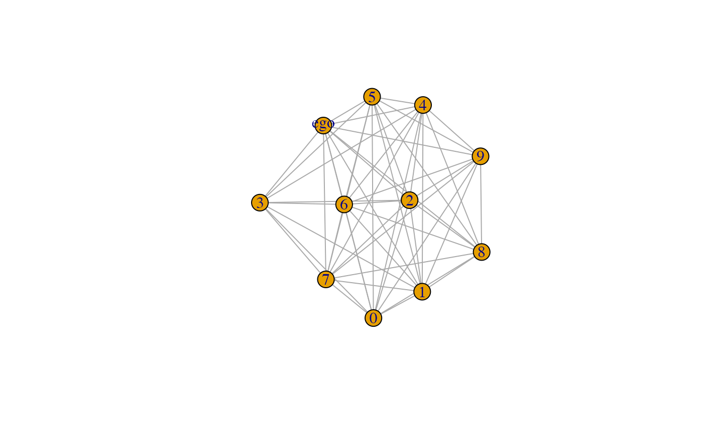

ego_netwrite)ego_netwrite.RdThe ego_netwrite function reads in data pertaining to ego networks and processes them into a set of standardized outputs, including measures commonly calculated for ego networks.
ego_netwrite(
egos,
ego_id,
alters = NULL,
alter_id = NULL,
alter_ego = NULL,
alter_types = NULL,
max_alters = Inf,
alter_alter = NULL,
aa_ego = NULL,
i_elements = NULL,
j_elements = NULL,
directed = FALSE,
aa_type = NULL,
missing_code = 99999,
na.rm = FALSE,
egor = FALSE,
egor_design = NULL
)A data frame containing measures of ego attributes.
A vector of unique identifiers corresponding to each ego, or a single character value indicating the name of the column in egos containing ego identifiers.
A data frame containing measures of alter attributes.
A vector of identifiers indicating which alter is associated with a given row in alters, or a single character value indicating the name of the column in alters containing alter identifiers.
A vector of identifiers indicating which ego is associated with a given alter, or a single character value indicating the name of the column in alters containing ego identifiers.
A character vector indicating the columns in alters that indicate whether a given alter has certain types of relations with ego. These columns should all contain binary measures indicating whether alter has a particular type of relation with ego.
A numeric value indicating the maximum number of alters an ego in the dataset could have nominated
A data frame containing an edgelist indicating ties between alters in each ego's network. This edgelist is optional, but ego_netwrite will not provide certain measures without it.
A vector of identifiers indicating which ego is associated with a given tie between alters, or a single character indicating the name of the column in alter_alter containing ego identifiers.
A vector of identifiers indicating which alter is on one end of an alter-alter tie, or a single character indicating the name of the column in alter_alter containing these identifiers.
A vector of identifiers indicating which alter is on the other end of an alter-alter tie, or a single character indicating the name of the column in alter_alter containing these identifiers.
A logical value indicating whether network ties are directed or undirected.
A numeric or character vector indicating the types of relationships represented in the alter edgelist, or a single character value indicating the name of the column in alter_alter containing relationship type. If alter_type is specified, ego_netwrite will treat the data as a set of multi-relational networks and produce additional outputs reflecting the different types of ties occurring in each ego network.
A numeric value indicating "missing" values in the alter-alter edgelist.
A logical value indicating whether NA values should be excluded when calculating continuous measures.
A logical value indicating whether output should include an egor object, which is often useful for visualizaton and for simulation larger networks from egocentric data.
If creating an egor object, a list of arguments to srvyr::as_survey_design specifying the sampling design for egos. This argument corresponds to ego_design in egor::egor.
ego_netwrite returns a list containing several output objects. Users may find it easier to access and work with outputs by applying list2env to this list, which will separate outputs and store them in the R Global Environment. Note, however, that this risks overwriting existing objects in the Global Environment should those objects share names with objects in netwrite's output. Outputs include a data frame containing measures of ego attributes, another data frame containing measures of alter attributes and network position, a third containing the alter-alter edgelist (when applicable), a fourth containing summary measures for each individual ego network, and a fifth providing summary measures for the overall dataset. Additionally, ego_netwrite returns a list of igraph objects constructed for each individual ego network, as well as an egor object for the overall dataset if desired.
# Simple Processing, Ignoring Ego-Alter or Alter-Alter Relation Types
ngq_nw <- ego_netwrite(egos = ngq_egos,
ego_id = ngq_egos$ego_id,
alters = ngq_alters,
alter_id = ngq_alters$alter_id,
alter_ego = ngq_alters$ego_id,
max_alters = 10,
alter_alter = ngq_aa,
aa_ego = ngq_aa$ego_id,
i_elements = ngq_aa$alter1,
j_elements = ngq_aa$alter2,
directed = FALSE)
#> Warning: (Bonacich power centrality) Isolates detected in network. Isolates will be removed from network when calculating power centrality measure, and will be assigned NA values in final output.
#> Warning: (Bonacich power centrality) Isolates detected in network. Isolates will be removed from network when calculating power centrality measure, and will be assigned NA values in final output.
#> Warning: (Eigenvector centrality) Isolates detected in network. Isolates will be removed from network when calculating eigenvector centrality measure, and will be assigned NA values in final output.
#> Warning: (Bonacich power centrality) Isolates detected in network. Isolates will be removed from network when calculating power centrality measure, and will be assigned NA values in final output.
#> Warning: (Bonacich power centrality) Isolates detected in network. Isolates will be removed from network when calculating power centrality measure, and will be assigned NA values in final output.
#> Warning: (Eigenvector centrality) Isolates detected in network. Isolates will be removed from network when calculating eigenvector centrality measure, and will be assigned NA values in final output.
# View summaries of individual ego networks
head(ngq_nw$summaries)
#> ego_id network_size mean_degree density num_isolates prop_isolates
#> 1 1 2 0.0 0.0000000 2 1.0
#> 2 2 1 0.0 NaN 1 1.0
#> 3 3 5 1.2 0.3000000 1 0.2
#> 4 4 10 8.6 0.9555556 0 0.0
#> 5 5 3 2.0 1.0000000 0 0.0
#> 6 6 0 NA NA NA NA
#> num_weakcomponent size_largest_weakcomponent prop_largest_weakcomponent
#> 1 2 1 0.5
#> 2 1 1 1.0
#> 3 2 4 0.8
#> 4 1 10 1.0
#> 5 1 3 1.0
#> 6 NA NA NA
#> num_strongcomponent size_largest_strongcomponent prop_largest_strongcomponent
#> 1 2 1 0.5
#> 2 1 1 1.0
#> 3 2 4 0.8
#> 4 1 10 1.0
#> 5 1 3 1.0
#> 6 NA NA NA
#> component_ratio pairwise_strong_un pairwise_weak_un fragmentation_index
#> 1 1.00 0.0 0.0 1.0
#> 2 NaN NaN NaN NaN
#> 3 0.25 0.6 0.6 0.4
#> 4 0.00 1.0 1.0 0.0
#> 5 0.00 1.0 1.0 0.0
#> 6 NA NA NA NA
#> effective_size efficiency constraint betweenness norm_betweenness dyad_mut
#> 1 2.0 1.0000000 0.5000000 1.00 1.000000000 0
#> 2 1.0 1.0000000 1.0000000 0.00 NaN 0
#> 3 3.8 0.7600000 0.4511111 6.00 0.600000000 3
#> 4 1.4 0.1400000 0.3599197 0.25 0.005555556 43
#> 5 1.0 0.3333333 0.9259259 0.00 0.000000000 3
#> 6 NA NA NA NA NA NA
#> dyad_null triad_003 triad_102 triad_201 triad_300
#> 1 1 0 0 0 0
#> 2 0 0 0 0 0
#> 3 7 3 5 2 0
#> 4 2 0 1 14 105
#> 5 0 0 0 0 1
#> 6 NA NA NA NA NA
# View summary of overall dataset
head(ngq_nw$overall_summary)
#> measure_labels
#> 1 Number of egos/ego networks
#> 2 Number of alters
#> 3 Number of isolates
#> 4 Number of one-node networks
#> 5 Smallest non-isolate network size
#> 6 Largest network size
#> measure_descriptions
#> 1 Total number of egos providing ego networks in dataset
#> 2 Total number of alters nominated by egos across entire dataset
#> 3 Number of egos who did not report any alters in their personal network
#> 4 Number of egos who reported only one alter in their personal network
#> 5 Smallest number of alters provided by a single ego
#> 6 Largest number of alters provided by a single ego
#> measures
#> 1 20
#> 2 67
#> 3 2
#> 4 3
#> 5 1
#> 6 10
# View sociogram of fourth ego network
plot(ngq_nw$igraph_objects[[4]]$igraph_ego)

# For advanced applications involving multiple relationship types
# and `egor` object creation, please consult the `ego_netwrite` vignette
vignette("ego_netwrite", package = "ideanet")
#> Warning: vignette ‘ego_netwrite’ not found